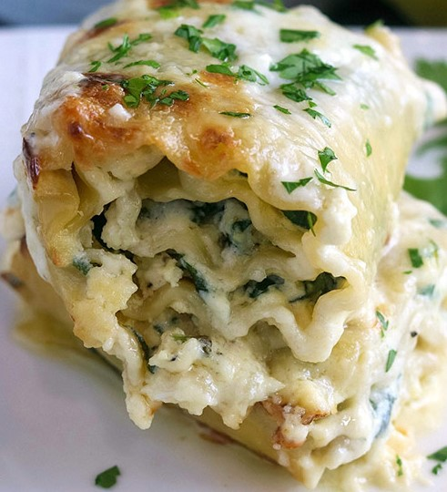

|

|
- 8 lasagna noodle sheets
- 4 cups baby spinach
- 1/4 cup diced onion
- 5 cloves of minced garlic
- 1 tablespoon avocado oil
- 15 ounces ricotta cheese
- 2/4 cup of fresh-grated parmesan cheese
- 1 teaspoon garlic powder
- 1 teaspoon onion powder
- 1 teaspoon sea salt
- 1 teaspoon fresh-cracked black pepper
- 1 teaspoon fresh minced oregano
- 1 teaspoon fresh minced thyme
- 2 eggs lightly beaten
- Parsley for garnish
- 3 tablespoons of button
- 1 cup of heavy whipping cream
|